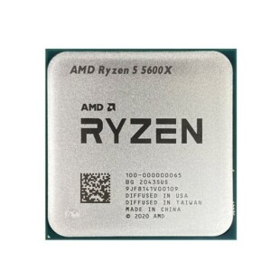

Sabia que o sufixo G do processador, isso significa que o processador tem placa de video integrada em nela
Tem tipo de tambem é U, pode significar que é de baixa tensão
pode ter o sufixo X, que são processadores potentes
pode ter o sufixo X3d que são bem mais potentes
uX sô processadores baixa tensão e são potente
GT é placa de vide integrada e bem potente